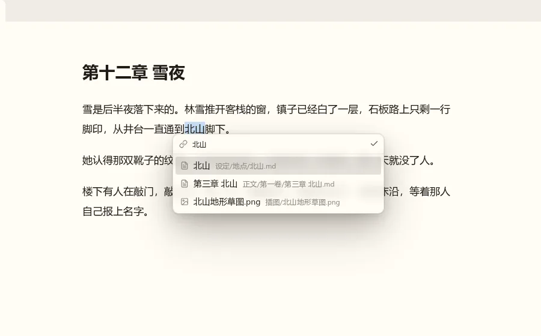
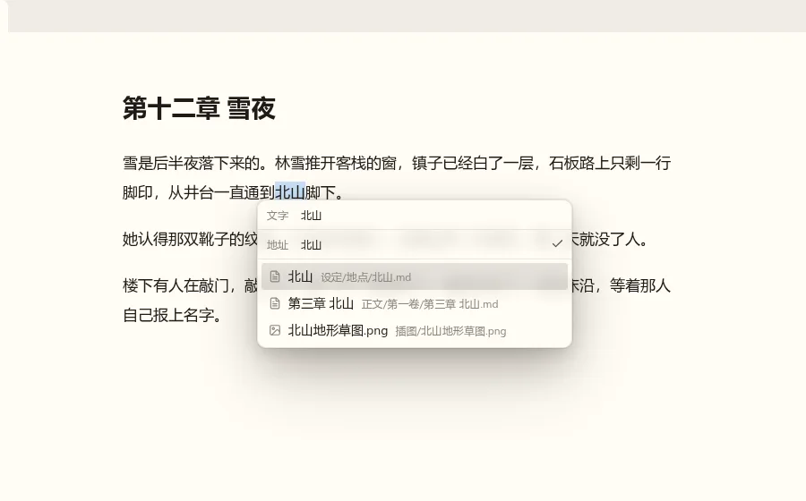
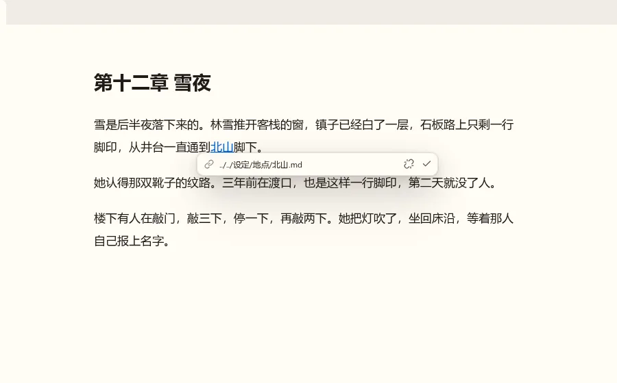
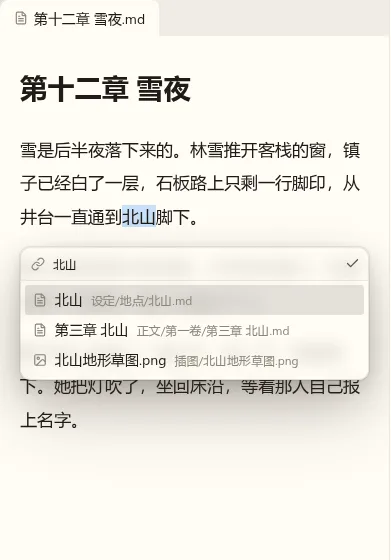
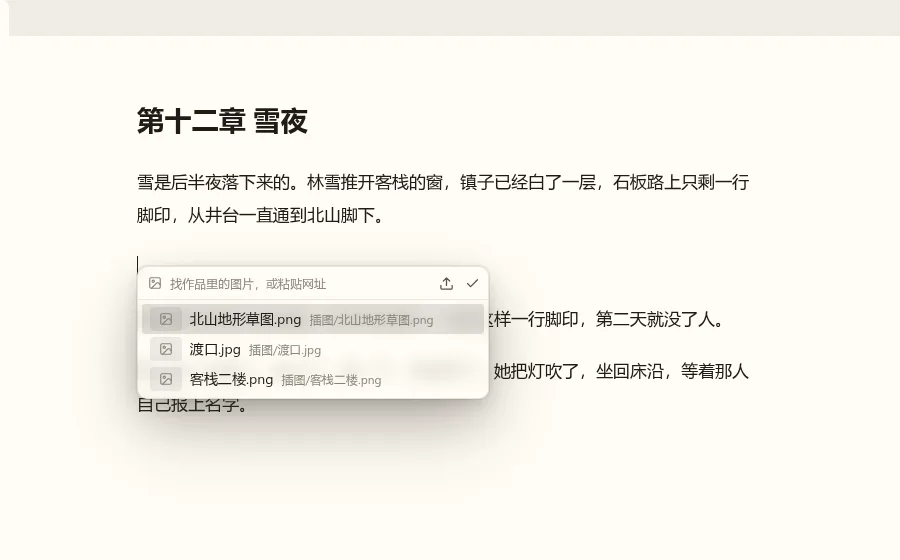
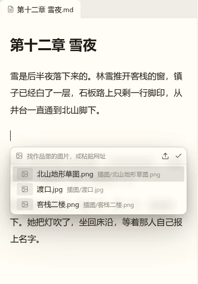

链接与插图：静态稿评审板
w00025 t09，第 1 轮。现在的 Markdown 编辑器插不了链接和图片：工具栏留着的链接按钮还没有动作，粘贴图片也不接。这个 Task 加上链接卡片、插图（找作品里的图、选本机文件、粘贴）、图片存放位置的设置。从系统拖文件进来归 w00046 t15（已定）。
图是在草稿 worktree 的 Lab 里用真实的 nb-ui 组件与主题变量搭的静态稿（亮色、nbook 主题），不接编辑内核。卡片的样子沿用注音卡片：浮层里一行，字直接写在卡片上，右边是按钮。都是选答。
问题 1：链接卡片填什么 待定
选中“北山”，按链接按钮（或 Ctrl+K）。地址框里打字时，下面列出作品里按名字和标题找到的文件；选一个，写进文件的是相对当前文件的地址。也能直接粘贴网址。
A 一行，只填地址
链接的文字就是正文里选中的字，要改直接在正文里改。没选字时插入的文字取文件的标题（或网址本身）。

B 两行，文字与地址
卡片里也能改链接的文字（Google 文档、Notion 的做法）。



问题 2：插图从哪里进 待定
插图卡片
斜杠菜单的“图片”与工具栏的插图按钮打开一张卡片，和链接卡片同样子：先列出存放目录里最近的图，打字找作品里的图，也能粘贴网址；右边的上传按钮选本机文件（复制进存放目录再插）。在正文里直接粘贴图片照常插入，不经卡片。


直接打开系统的选文件
斜杠菜单的“图片”直接弹系统的选文件对话框；作品里已有的图，要用链接卡片找到后插成图片（卡片里分不清要链接还是要图，得再加一个开关）。
问题 3：粘贴、上传的图缺省存到哪里 待定
设置里四种都能选（照 Obsidian）；这一题定缺省。设置跟着作品走（存在作品里，换机器一样），不是本机设置。
作品根下的 插图/
与生图放进书里的缺省目录相同；正文的目录里不混进图片。
作品根
Obsidian 的缺省。
与当前文件同目录
图和章节放在一起；正文的目录树里会出现图片。
当前文件旁的子目录
例如每卷一个 images/，没有就建。
问题 4：粘贴、上传的图存成什么 待定
普通图片文件
一张图一个 .png、.jpg，正文写 ，别的 Markdown 工具也能看。
.image 文件夹
图像生成提案里书中生成的图的格式：一张图一个文件夹，带版本与 image.json，正文按 id 引用（随 w00042 t09 定）。粘贴的图也这样存，以后能和生成的图一样换版本。
.image 的引用写法还没定，现在用它会等 w00042。已按推荐画的，不用答 说明
- 写进文件的地址都相对当前文件（方言 Spec 输出 18）；文件挪了以后链接会断，这个 Task 不管跟着改。
- 打开链接：按住 Ctrl 点链接。作品里的文件在编辑器里打开，网址交给浏览器。单击仍是编辑（现有约定）。
- 选本机文件保留原名；粘贴的图没有名字，叫“粘贴的图片 2026-11-16 15.04.31.png”；重名时加序号，不覆盖。
- 上传只收常见的图片格式，大小上限与读取图片相同（32 MiB）。